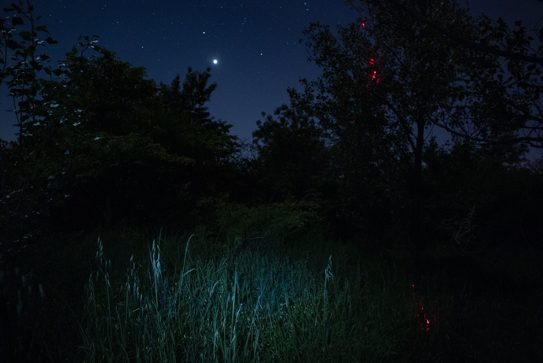
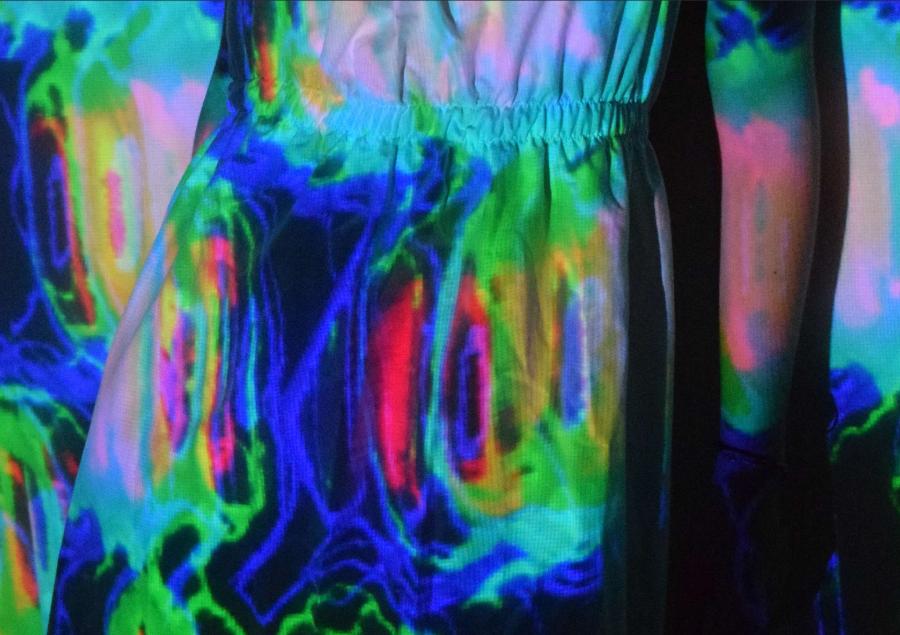
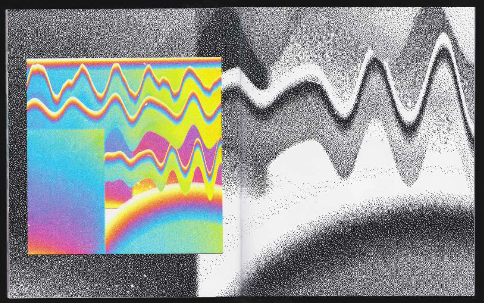

Un clip (non officiel) du morceau Underwaterfall de Bearcubs.
J'ai conçu un programme sur processing qui règle la vitesse d'une vidéo de vagues (récupérée sur internet) en fonction des intensités sonores de la musique.
Clip vidéo, 4 minutes 22 secondes, 2021
Clip vidéo, 4 minutes 22 secondes, 2021

Premier numéro d'un fanzine numérique avec comme thématique les mutations
de la matière. Nous avons essayé de porter le principe du zine et de le transformer pour
et avec le web, pour une plus grande diffusion, mais aussi pour tester la compatibilité
des deux univers, souvent très éloignés. Nous avons tous deux eu la triple démarche
de designers, programmeurses & éditeurices.
Avec Philippine Talamona
lien, 2021+
Avec Philippine Talamona
lien, 2021+


Un atlas, qui cherche à comprendre le vin, en multipliant les sources et les approches de ce dernier. En explorant le vin au travers du terroir, du temps, du sang et de la soif on en vient à questionner le rapport que les civilisations ont entretenu et entretiennent avec l'alcool, le vin et ses différentes implications. Le livre est à 80% composé de citations et d'images issues de recherches personnelles dans les domaines académiques, oenologue, populaires, traditionnels et littéraires.
Édition, 140x195 mm, 96p., reliure suisse, imprimé en laser sur Munken Print White 80g, 2020
Édition, 140x195 mm, 96p., reliure suisse, imprimé en laser sur Munken Print White 80g, 2020

Un site regroupant des souvenirs de 4 personnes parties au Pôle Sud ou Nord,
Marie, Éric, Jésus et Ambre. Les fragments de souvenirs sont en vrac, au tour du visiteur du site de fouiller et de retracer leurs itinéraires mentaux, impressions de ces territoires peu accessibles. Chercher chez chacun et partager le poétique et sensible cet environnement hostile.
html, css, javascript, 2020
html, css, javascript, 2020
Ce projet est un specimen, au sens large du terme, autour de la typographie Orchard, dessinée par Rory King. La légèreté du tracé et les envols du caractère m'ont évoqué un univers mi-poétique, mi-scientifique empreint de teintes RVB. J'ai alors écrit un texte de science-fiction évoquant la découverte de ces signes, que j'ai intégré dans le specimen.
Une sérigraphie a été réalisée pour compléter le specimen.
Édition, A3, 6p., non reliée, laser papier recyclé gris 80g. 4 encarts imprimés en lasers sur papier argenté 125g
Sérigraphie 3 passages (jaune, bleu et rose fluos), 410x295 mm, papier couché 170g,2021
Une sérigraphie a été réalisée pour compléter le specimen.
Édition, A3, 6p., non reliée, laser papier recyclé gris 80g. 4 encarts imprimés en lasers sur papier argenté 125g
Sérigraphie 3 passages (jaune, bleu et rose fluos), 410x295 mm, papier couché 170g,2021




Projet réalisé une fois en 2018, qui sera prolongé en 202X. Esteban a réalisé deux robes blanches et moi des visuels à projeter dessus, des images glitchées en sonification et des photos. Les robes et leurs froncures transforment les images projetées et les projections transforment les robes, vice-versa.
Avec Esteban Montois
Avec Esteban Montois


Frutos est un caractère typographique de 100 pictogrammes, créé à partir d’une collection d’images. Basée sur l’amas, le regroupement, c'est un concept homogène à partir d’éléments hétéroclites. Frutos est né de la bouche d’un antiquaire du marché rue de la Douane, de photographies d’objets, d’aller-retours. Ont été réalisés pour le présenter un spécimen et un site web.
Avec Emilie Raoul
Édition de 15*25 cm, 48p. impression numérique sur papier glossy. Comporte un livret intérieur, 20p. sur papier recyclé, 2020
Avec Emilie Raoul
Édition de 15*25 cm, 48p. impression numérique sur papier glossy. Comporte un livret intérieur, 20p. sur papier recyclé, 2020
Le spécimen agit comme le catalogue de Frutos, chaque objet a son histoire, son passé lié avec l’antiquaire Frutos. On trouve un bon de commande à la fin pour recevoir les trésors.
Le site s’inspire des points & click, on se balade en vue à la première personne dans plusieurs tableaux qui sont la boutique de Frutos. En cliquant sur les objets, on s’aventure de plus en plus loin dans la boutique, jusqu’à un artefact divin.
Le site s’inspire des points & click, on se balade en vue à la première personne dans plusieurs tableaux qui sont la boutique de Frutos. En cliquant sur les objets, on s’aventure de plus en plus loin dans la boutique, jusqu’à un artefact divin.


Une série de 6 affiches, (ici une sélection), où à l'aide d'un programme écrit sur processing, je récupère les données sonores d'une musique comme la hauteur d'une note ou la saturation générale pour en recréer une représentation fixe, il s'agit d'écrire le temps.
processing,2020
processing,2020



Une courte édition, suite d’expériences graphiques en tout genre ayant comme fil conducteur la nuit festive de deux amoureux.
Édition de 17*21 cm 28 p. impression numérique sur papier glossy, 2019
Édition de 17*21 cm 28 p. impression numérique sur papier glossy, 2019